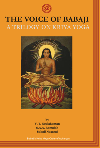
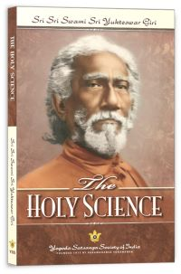
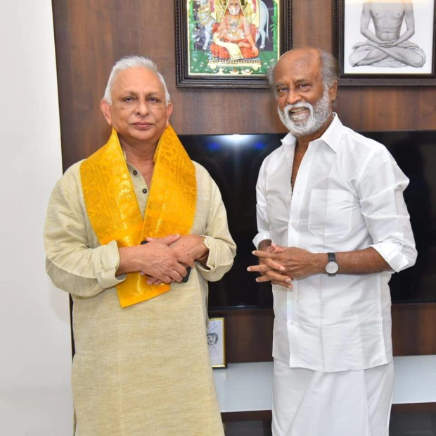
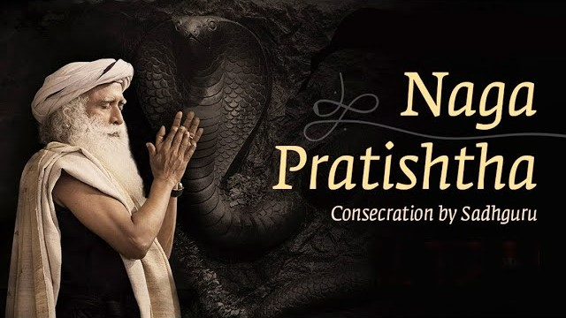

Varaverpu Malai - 2
Vallalar's statement about Kali Purushan ( Ruler Of kali Yuga) - 1872 :
In the first yuga, a day is equivalent to 8 . In the second yuga, a day is equivalent to 6 . In the third yuga, a day is equivalent to 4.
In the fourth yuga, a day is equivalent to 2 units. Therefore, the total number of days in 20 units of time is calculated as follows: 60 x 60 x 60 = 2,16,000 seconds.
This means we have 60 "Naligai" per day, with 60 seconds per "Naligai" and 60 seconds per minute.Thus, for two days,
it would be 4,32,000 seconds. However, it is incorrect to say that these 4,32,000 seconds correspond to the duration of a Kali yuga.
The duration of a Kali yuga is only 5,000 years. The Kali yuga will end by 1900.During the beginning of the Kali yuga, an impure
Maya Siddhar (a practitioner of mystical arts) consumed a "Baspam" (a herb to increase lifespan) to live for several thousand years.
This Siddhar is known as the ruler of the Kali yuga, or the Kali Purushan. The Kali Purushan had the ability to make his body invisible and
change his appearance frequently, controlling the Earth according to his will.
Who is that Kali Yuga Purushan (Ruler of Kali yuga) ?
We can explore the identity of Kali Purushan, based on the books that have emerged through the teachings of Maha Avatar Babaji



My first meeting with Babaji took place in my thirty-third year,” Lahiri Mahasaya had said. “In the autumn of 1861 I was stationed in Danapur as an accountant in the Military Engineering Department of the Government. One morning the office manager summoned me.....
Autobiography of yogi
The Northern Himalayan crags near Badrinarayan are still blessed by the living presence of Babaji, guru of Lahiri Mahasaya. The secluded master has retained his physical form for centuries, perhaps for millenniums....
Autobiography of yogi
In the year 1865, Vallalar established the principle called Suddha Sanmargam. He claimed that only Suddha Sanmargam leads to eternal life without death, which was revealed to him by Lord Arutperunjothi. He expressed this truth in his holy book "Thiruvarutpa" through various verses. The primary practices of Sanmarga are to see all beings as equal to oneself, to contemplate on Lord Arutperunjothi, and to express unconditional love towards Lord ArutPerumJothi. Through these practices, one can attain a life free from the cycle of birth and death, as stated by Vallalar..
“ உலகில் உள்ள உயிர்கள் எல்லாம் ஒளிநெறி பெற்றிட இலகும் ஐந்தொழிலையும் யான் செய்ய
தந்தனை ”
Lord Arutperumjothi has bestowed upon me the power of Shiva, Brahma, Vishnu, Rudra, and
Sadashiva to uplift the human race and guide them on the path of light - Suddha Sanmargam.
From the verses of ThiruArutpa,
it is evident that Lord ArutPerumJothi has granted Vallalar the authority to govern the universe and propagate Suddha Sanmargam throughout the cosmos.
When the world is undergoing transformation for Suddha Sanmargam as directed by Lord ArutPerumJothi !
Why did the art of Kriya Yoga emerge in the realm of this Earth by Maha Avatar Babaji in 1861?
What happened to Paramahamsa Yoganantha, Lahari Mahasaya, and Yutheswar Giri, who practiced Kriya Yoga?
They finally died in the state of Samadhi. Taken Thier Souls to Astral galaxies (fourth dimension - Angels/Demons). They are currently living in astral galaxies. Yukteswar Giri has also spoken about this matter, explaining it to Paramahamsa Yogananda in the book "Autobiography of Yogi"
Sri Yukteswar explained. It is called Hiranyaloka or ‘Illumined Astral Planet.’ There I am aiding advanced beings to rid themselves of astral karma and thus attain liberation from astral rebirths. The dwellers on Hiranyaloka are highly developed spiritually; all of them had acquired, in their last earth-incarnation, the meditation-given power of consciously leaving their physical bodies at death.
Autobiography of Yogi
Vallalar states that immortality can only be attained while existing in the human body. It is through the grace of Lord ArutPerumJothi that one can transform the human body into the Pure Body, Pranava Body, and the Body of Wisdom light. This is what Vallalar refers to as the complete state in his principle of Suddha Sanmargam. Why should we practice kriya, enter samadhi, and guide our soul out of the physical body to wander in Astral Galaxies? This is not the final state. If that is the case, why does Maha Avatar Babaji teach kriya?
Paramahamsa Yogananda clearly knows that Maha Avatar Babaji is not a god. Babaji instructed Paramahamsa Yogananda to go to America to propagate Kriya Yoga in the year 1920. Babaji mentioned that Jesus Christ had instructed him to disseminate the science of yoga to the people in America. Paramahamsa Yogananda would go into deep meditation seeking acceptance from God to leave India and go to America, but there would be no reply from God. Suddenly, Maha Avatar Babaji would appear in front of Paramahamsa Yogananda and say that God has given him permission to go to America.
One early morning I began to pray, with an adamant determination to continue,
even to die praying, until I heard the voice of God. I wanted His blessing and assurance that I would not lose myself
in the fogs of modern utilitarianism. My heart was set to go to America, but even more strongly was it resolved to hear
the solace of divine permission. I prayed and prayed, muffling my sobs. No answer came. At noon I reached a zenith;
my head was reeling under the pressure of my agonies.
I felt that if I cried once more, increasing the depth of my inner passion,
my brain would split. At that moment there came a knock on the door of my Garpar Road home. Answering the summons,
I beheld a young man in the scanty garb of a renunciant. He entered the house. “He must be Babaji!” I thought,
dazed, because the man before me had the features of a young Lahiri Mahasaya.
He answered my thought. “Yes, I am Babaji.”
He spoke melodiously in Hindi. “Our Heavenly Father has heard your prayer. He commands me to tell you:
Follow the behests of your guru and go to America. Fear not; you shall be protected.” After a vibrant pause,
Babaji addressed me again. “You are the one I have chosen to spread the message of Kriya Yoga in the West.
Long ago I met your guru Yukteswar at a Kumbha Mela; I told him then I would send you to him for training.
Autobiography of Yogi
If we analyze the above statement, it becomes clear that God doesn't grant permission for Paramahamsa Yogananda to go to America and preach Kriya Yoga. However, it is Maha Avatar Babaji who falsely claims that God has given permission and instructs Paramahamsa Yogananda to go to America and propagate Kriya Yoga.
You May ask how does Maha Avatar Babaji lied? In the year 1874, Lord ArutPerumJothi instructed Vallalar to preach Suddha Sanmargam around the cosmos. In such a case, how could Lord ArutPerumJothi have instructed to preach Kriya Yoga around the world in the year 1920?
In the year 1894, Maha Avatar Babaji appeared in front of Yukteswar Giri and instructed him to write a book titled "The Holy Science". Babaji asked Yukteswar Giri to write about Sanatana Dharma and the Kali Yuga.
A message of such a nature was I chosen to propagate when I paid a visit to
the Kumbha Mela being held at Allahabad in January 1894. As I was walking along the bank of the Ganges,
I was sum- moned by a man and was afterwards honoured by an interview with a great holy person, Babaji,
the gurudeva of my own guru, Lahiri Mahasaya, of Banaras.
This holy personage at the Kumbha Mela was
thus my own paramguruji maharaj, though this was our first meeting. During my conversation with Babaji,
we spoke of the particular class of men who now frequent these places of pilgrimage.
I humbly suggested
that there were men greater by far in intelligence than most of those then present, men living in distant
parts of the world-Europe and America-professing different creeds, and ignorant of the real significance
of the Kumbha Mela.
They were men fit to hold communion with the spiritual devotees, so far as intelligence
is concerned; yet such intellectual men in foreign lands were, alas, wedded in many cases to rank materialism.
Some of them, though famous for their investigations in the realms of science and philosophy, do not recognize
the essential unity in religion. The professed creeds serve as nearly insurmountable barriers that threaten
to separate mankind forever.
My paramguruji maharaj Babaji smiled and, honouring me with the title of Swami,
imposed on me the task of this book.
The Holy Science
Whatever Vallalar spoke about the Kali Yuga in 1872, the same content is available in the book "The Holy Science." However, there are differing opinions in certain places. In the book "The Holy Science," it is also mentioned that the calculation for the duration of the Kali Yuga (4,32,000 years) was incorrect. However, it is stated that the Kali Yuga ended in the year 1700.
Now, in this 194th year of Dwapara Yuga, the dark age of Kali having long since passed, the world is reaching out for spiritual knowledge, and men require loving help one from the otherThe publishing of this book, requested from me by my holy paramguru maharaj Babaji, will, I hope, be of spiritual service.
The Holy Science
The book "The Holy Science" was written in the year 1894. Therefore, if we subtract 194 from 1894, it comes to 1700.
Vallalar declared in 1874, that the Kali Yuga will end by the 1900. In this case, why did Yukteswar Giri state that the Kali Yuga ended in 1700?
These are all acts of Maha Avatar Babaji designed to confuse the people. In 1874, Vallalar prophesied that people from America and Russia would come to India and spread Sudha Sanmargam.
You do not listen to me. You do not follow the principles of the teachings. You seem to be determined not to be convinced by me. Yet the time is not far off when persons from Russia, America and other foreign lands will come to India and preach to you this same doctrine of Universal Brotherhood. Then only will you know and appreciate the grand truths that I am now vainly trying to make you accept. You will soon find the brothers who live in the far north will work a great many wonders in India, and thus confer incalculable benefits upon this our country
In the year 1894, Maha Avatar Babaji told Yukteswar Giri, "Kriya Yoga should be initiated for the people in America and Europe. In the future, I will send a student (Paramahamsa Yogananda) to you."
You, Swamiji, have a part to play in the coming harmonious exchange between Orient and Occident. Some years hence I shall send you a disciple(Paramahamsa Yoganandha) whom you can train for yoga dissemination in the West. The vibrations there of many spiritually seeking souls come floodlike to me. I perceive potential saints in America and Europe, waiting to be awakened....
The Holy Science
If we analyze the above statement, In 1874, Lord ArutPerumJothi granted Vallalar full authority to spread Sudha Sanmargam to the cosmos. In such a scenario, why did Maha Avatar Babaji state in 1894 to Yukteswar Giri that he would send him a student (Paramahamsa Yogananda) who would preach Kriya Yoga in America and Europe? From this, it becomes clear that Maha Avatar Babaji, also known as Kali Purushan, is engaging in such evil acts to divert people from the principles of Sudha Sanmargam.
If we practice Kriya Yoga, we can attain samadhi. In the state of samadhi, we can separate our soul from the physical body. This enables us to travel to astral galaxies and explore countless realms within the astral plane. Once we experience the vastness and beauty of the astral galaxies, we may lose interest in returning to planet Earth. Yukteswar Giri describes this phenomenon as follows
Normal or long-established residents of the astral universe, on the other hand, are those who, freed forever from all material longings, need return no more to the gross vibrations of earth. Such beings have only astral and causal karma to work out. At astral death these beings pass to the infinitely finer and more delicate causal world. At the end of a certain span, determined by cosmic law, these advanced beings then return to Hiranyaloka or a similar high astral planet, reborn in a new astral body to work out their unredeemed astral karma. “My son, you may now comprehend more fully that I am resurrected by divine decree,” Sri Yukteswar continued, “as a saviour of astrally reincarnating souls coming back from the causal sphere, in particular, rather than of those astral beings who are coming up from the earth. Those from the earth, if they still retain vestiges of material karma, do not rise to the very high astral planets like Hiranyaloka.
Autobiography of Yogi
The plan of Maha Avatar Babaji is to lead us to samadhi and make us wander in astral galaxies. However, this is not the final state. According to Vallalar's Sudha Sanmargam principle, once we leave our physical body, we cannot attain immortality. Vallalar also stated that "the practice of samadhi is not a good practice"
“Mr. Dickinson!” The next parcel contained a gift that I had bought in a Calcutta bazaar.
“Mr. Dickinson will like this,” I had thought at the time. A beloved disciple, Mr. E. E. Dickinson had been present at
every Christmas festivity since the 1925 founding of the Mt. Washington Centre. At this eleventh annual celebration,
he stood before me, untying the ribbons of an oblong package.“The silver cup!” Struggling with emotion,
he stared at the present, a tall drinking cup. He seated himself some distance away, apparently in a daze.
I smiled at him affectionately before resuming my role as Santa Claus.
The ejaculatory evening closed with
a prayer to the Giver of all gifts; then a group singing of Christmas carols. Mr. Dickinson and I were chatting together
some time later. “Sir,” he said, “please let me thank you now for the silver cup. I could not find any words on Christmas night.”
“I brought the gift especially for you.” “For forty-three years I have been waiting for that silver cup! It is a long story,
one I have kept hidden within me.” Mr. Dickinson looked at me shyly.
“The beginning was dramatic: I was drowning.
My older brother had playfully pushed me into a fifteen foot pool in a small town in Nebraska. I was only five years old then.
As I was about to sink for the second time under the water, a dazzling multicoloured light appeared, filling all space.
In the midst was the figure of a man with tranquil eyes and a reassuring smile. My body was sinking for the third time when one of my brother’s
companions bent a tall slender willow tree in such a low dip that I could grasp it with my desperate fingers. The boys lifted me
to the bank and successfully gave me first-aid treatment.
“Twelve years later, a youth of seventeen, I visited Chicago with my mother.
It was September 1893; the great World Parliament of Religions was in session. Mother and I were walking down a main street, when again
I saw the mighty flash of light. A few paces away, strolling leisurely along, was the same man I had seen years before in vision.
He approached a large auditorium and vanished within the door.“ ‘Mother,’ I cried, ‘that was the man who appeared at the time I was drowning!’
“She and I hastened into the building; the man was seated on a lecture platform. We soon learned that he was Swami Vivekananda of India.
After he had given a soul-stirring talk, I went forward to meet him. He smiled on me graciously, as though we were old friends.
I was so young that I did not know how to give expression to my feelings, but in my heart I was hoping that he would offer to be my teacher.
He read my thought. “ ‘No, my son, I am not your guru.’ Vivekananda gazed with his beautiful, piercing eyes deep into my own. ‘Your teacher will come later.
He will give you a silver cup.’ After a little pause, he added, smiling, ‘He will pour out to you more blessings than you are now able to hold.’
“I left Chicago in a few days,” Mr. Dickinson went on, “and never saw the great Vivekananda again.
But every word he had uttered was indelibly written on my inmost consciousness. Years passed; no teacher appeared.
One night in 1925 I prayed deeply that the Lord would send me my guru. A few hours later, I was awakened from sleep by soft
strains of melody. A band of celestial beings, carrying flutes and other instruments, came before my view. After filling the air with glorious music,
the angels slowly vanished. “The next evening I attended, for the first time, one of your lectures here in Los Angeles,
and knew then that my prayer had been granted.” We smiled at each other in silence. “For eleven years now I have been your Kriya Yoga disciple,
” Mr. Dickinson continued. “Sometimes I wondered about the silver cup; I had almost persuaded myself that the words of Vivekananda were only metaphorical.
“But on Christmas night, as you handed me the little box by the tree, I saw, for the third time in my life, the same dazzling flash of light.
In another minute I was gazing on my guru’s gift that Vivekananda had foreseen for me forty-three years earlier—a silver cup!
Autobiography of yogi
Now we can understand clearly Why Sanatana Dharma, a form of Hinduism, spread in America during a era of Sudha Sanmargam !
“Lord Krishna!” The glorious form of the avatar appeared in a shimmering blaze as I sat in my room at the Regent Hotel in Bombay. Shining over the roof of a high building across the street, the ineffable vision had suddenly burst on my sight as I gazed out of my tall open third-storey window. The divine figure waved to me, smiling and nodding in greeting. When I could not understand the exact message of Lord Krishna, he departed with a gesture of blessing. Wondrously uplifted, I felt that some spiritual event was presaged.
Autobiography of yogi
One night while I was engaged in silent prayer, my sitting room in the Encinitas hermitage became filled with an opal-blue light. I beheld the radiant form of the blessed Lord Jesus. A young man, he seemed, of about twenty-five, with a sparse beard and moustache; his long black hair, parted in the middle, was haloed by a shimmering gold. His eyes were eternally wondrous; as I gazed, they were infinitely changing. With each divine transition in their expression, I intuitively understood the wisdom conveyed. In his glorious gaze I felt the power that upholds the myriad worlds. A Holy Grail appeared at his mouth; it came down to my lips and then returned to Jesus. After a few moments he uttered beautiful words, so personal in their nature that I keep them in my heart.
Autobiography of Yogi
Sri V.T. Neelakantan recorded verbatim a series of talks given by Satguru Kriya Babaji in 1953. These are a fountain of delight and inspiration, illuminating the Kriya Yoga path towards God realization, unity in diversity and universal love. They also reveal the magnetic personality of Babaji and how he supports us all, with much humour and wisdom. They were originally printed in three volumes: "The Voice of Babaji and Mysticism Unlocked," "Babaji's Masterkey to All Ills, (Kriya)" and "Babaji's Death of Death (Kriya)." Includes the fascinating accounts of the meetings with Babaji in Madras and in the Himalayas by authors V.T. Neelakantan and Yogi S.A.A. Ramaiah. Out of print for nearly 50 years, they are profound and important statements from one of the world's greatest living spiritual masters. Source Link


In the year 1920, Maha Avatar Babaji instructed Paramahansa Yogananda to teach Kriya Yoga in America. He stayed there and continued to teach until 1952 when he attained samadhi and left his physical body.
After Paramahansa Yogananda left his physical body, Maha Avatar Babaji came to Tamilnadu, Madras .
Maha Avatar Babaji chose Neelakantan and Ramaiah to propagate Kriya Yoga in the state of Tamil Nadu. In this, Ramaiah was also following Vallalar.
Vallalar doesn't like Ramaiah to join hands with Maha Avatar Babaji to spread kriya. The below statement was told by Maha Avatar Babaji to Neelakantan.
The Voice of Babaji: A Trilogy on Kriya Yoga (Page number - 138)
Babaji : "Your 'other half (S.A.A.Ramaiah)' has dedicated 'A Blissful Saint' to my lotus feet.The Swamiji (Vallalar) concerned will not like it "Neelakantan : "But Guru Deva, he only thinks in terms of you in others."
Babaji :"That swami (vallalar) does not expect him to write this type of book"
From the above conversation, it is very clear that Vallalar does not like Maha Avatar Babaji spreading Kriya Yoga.
Moreover, Maha Avatar Babaji was well aware of Vallalar. Read the below conversation
The Voice of Babaji: A Trilogy on Kriya Yoga (Page number - 143 & 144)
Ramaiah: "Hammering headache?"Neelakantan : "No, forget something important.Trying to recollect it. Ah, there it is. Master(Babaji) also said,"Hereafter persons may be coming frequently for help." I asked "where?" Babaji said, "one connected with Vadalur Ramalinga Swamigal will approach your 'other half (Ramaiah)'. He should bear in mind that all missions are my missions. Further ,I like this saint of Vadalur "
Ramaiah: "What a pity! The visitor who was here when you came had just come for that very purpose. He is preaching the gospel of Vadalur Ramalinga. How nice it would have been if you had mentioned this earlier. Now it is late. We have missed the bus."
Neelakantan:""I didn't know the identity of the person," shouted the journalist in amazement”. Monday, October 13, 1952.
Babaji : "So i will have to hunt again for Ramalinga Swamigal," smiled clairaudent Babaji at the zero hour.
The Voice of Babaji: A Trilogy on Kriya Yoga (Page number - 143 & 144)
Babaji : "He may give up the idea of using the tri-color picture for this book. " While writing the last chapter of this book the Master (Babaji) hinted that it will be over in a couple of days. On the eve of parting the loving Apostle of Kriya Yoga reverted to the first topic:"Yes, I must try to get at the Ramalinga devotee"Neelakantan: intervened , "Nothing substantial can be done now he was sent away"
Babaji : "I want your 'other half (Ramaiah)' to do this as vaidhyaarybaparihara. That Ramaling devotee is trying to spread the gospel of Ramalinga, as you both are doing mine.
The Voice of Babaji: A Trilogy on Kriya Yoga (Page number - 144 & 145)
Babaji : "Tomorrow a person will come with presents, but his temper will be bad. Be prepared for it".Neelakantan : This forcast came true to the very letter and in the noon the Ramalinga devotee, Sri Vadivelu Pillai, turned up. Before the writer could verify the welcome, the visitor mentioned that he has been preaching the gospel of Ramalinga in spite of the burden of maintaining a big famaily of five children!
Maha Avatar Babaji was aware of Vallalar. In such a case, does Babaji not know that Vallalar had attained the state of "Arutperumjothi"? Moreover, does Babaji not know that by the principle of Sudha Sanmargam, only one can attain true immortality?
Maha Avatar Babaji was aware of everything. To delay the spread of Sudha Sanmargam, Maha Avatar Babaji intentionally promotes Kriya Yoga!
Futher more Babaji asked Neelakantan to eat eggs !
The Voice of Babaji: A Trilogy on Kriya Yoga (Page number - 304 & 305)
Monday,November 10 , 1952At 1:30 a.m., for more reasons than one, Kriya Babaji asked the journalist to take eggs, as was strongly and repeatedly advised by the doctor: "You better take eggs. I you to be fit and ready for your strenuous American trip. You may have to lecture thrice a day with drawing room talks in between. Must prepare yourself for the Western mode of living."
Neelakantan: "Master, how do I take something that has been given up as bad?"
Babaji: "You have come to a stage where there is no difference of good and bad. All that is bad should become good when it comes to you."
Neelakantan: "Guru Deva, what about the money?"
Babaji: "Two eggs a day may cost you about 4 annas. That is all. You tell your 'other half.' HUM... Go on."
Without allowing further discussion, the journalist was made to write till 5 a.mThat morning, the doctor repeated his earlier suggestions to take eggs, fried, boiled or half-boiled
Maha Avatar Babaji used to sit on an animal skin whenever he appeared in front of Neelakantan.

Sitting on animal skin, asking peoples to eat egg these are all againt the compassion. Without compassion towards all living beings one cannot reach the Lord ArutPerumJothi.
If we analyze all the aforementioned elements, it becomes clear that Maha Avatar Babaji is indeed the Kali Purushan (Ruler of the Kali Yuga).

From Pune, I took a bus to Shirdi and reached late at night.
At the entrance of the samadhi complex stood Babaji"So you met the young yogi,' he said.
'Here everything is closed now but we shall go to the chavadi, where Sainath used to sleep.
'We walked past the samadhi, gurusthan and Dwarkamai, where the dhuni fire burns, and reached the
small structure called the chavadi, There was no one around except a few stray dogsThe wooden door
was closedI wondered what we were going to do.Babaji said, 'Let's enter "The door is locked,' I pointed out.
'I know,he said. 'Now close your eyes and act as if you were entering the door. "'But Babaji...Just do it and don't open your eyes.'
With my eyes closed, I put my right foot forward with my knee bentIt felt like I was pushing against a cloth screen. It was the
same feeling when the rest of my body came in contact with the doorIn a flash, the feeling disappeared,
and heard Babaji saying, Okay, open your eyes.I"I opened my eyes and found myself inside the chavadi. The door was still locked.
Babaji was standing beside me.
I had hardly recovered from the astonishment of somehow walking through a closed and
locked door, when I was taken aback by something even more astonishing and unbelievable. On a narrow wooden plank,
suspended from the roof by torn pieces of old cloth, twisted together like a rope, reclined the Sai Baba of
Shirdi-who was supposed to have passed away in 1918! As I stared at him with wonderment and awe, my hair
stood on end and my whole body trembled He sat up on the plank, and as I wondered how he could come down from
his peculiar bed, hanging six feet above the ground.
He quietly slid off the plank and floated down effortlessly
I noticed that the cloth that he is normally seen with, wrapped around his head was missing.
His head was clean shaven, and when he stood beside us, I realised that he was a six-footer, and built like a .
He hugged Babaji, Muslim style, and they kissed each other's noses lightly.
I prostrated at his feet.
He lifted me back to standing position and said, 'Salaam boy,
you have got a great guru, murshid. also had a great guru, my Venkusha, and all I did, was stare at him. Allah malik hai, Ram Ram."
Babaji said, 'Please bless him, Baba."'Allah malik hai, you have to do the kind of work I do,
in a different way.I Not easy, lad. This world is crazy and they think I am mad. Hu Allah,
Ram, Ram, Ram. Do Kabir's workTake guru's blessingsHe reached under the sheet that covered his plank bed, and took out a wad of currency.
Here,' he said, 'Allah bhala karega (God will take care)Take this money and travel to Ganagapur, Pithapur and Akkalkot. Go, go."
Apprenticed to the Himalayan master
After the night's prayer, Shah Sahib came personally to usher us to his house for dinner. There were about six or seven of his disciples. We cross-legged on mats and ate from ceramic plates. Two disciples served the food'Vegetarian food is also cooked specially for Babaji,said Shah Sahib'Young man, if you are also vegetarian, you can have the special food."Babaji surprised me by saying, "Today, we shall eat mutton biryani and kebab.' He winked at me. "This young man used to like biryani, except that he thinks his mother makes the best biryani in the world.'Everyone laughed, and after a silent prayer, we enjoyed one of the best biryanis I have eaten in my life. After the meal, Shah Sahib announced to the group that I would be joining their halqa (circle) for three weeks. I was welcomed with hugs and exclamations of Allah be praised.'
Apprenticed to the Himalayan master
"Thousands of years ago, when humanity was still in infant stages of mental evolution,
there was regular contact with Sarpa Loka. The wise and evolved Nagas frequented the earth, and spent long periods here,
teaching and educating human beings. The snake worship you come across in all ancient civilizations is a tribute
to the advanced Nagas of yore. Their images were venerated for the deep wisdom that they possessedThey also taught
the secret of the kundalini energy again symbolized by a serpent.
'Patanjali, who gave the world the Ashtanga Yoga Sutras, was himsef a Naga,
and is depicted as half-man and half-snake. The snake on pharaoh's head and the snake coiled around the yogi-god Shiva,
areal symbolic representations of wisdom and power, imparted to certai human beings by the Naga teachers.
Humans, or at least a majority of them,
were ready even to kill of personal gain. Some felt threatened by the intellectually and spiritually superior Nagas, and forgetting their
indebtedness, began to use the powers that they had acquired from the Nagas against them. at one point, there were large scale magas against
the Nagas. The Supreme Naga Chief decided to recal the Nagas from earth and all connections, except with some human beings who were highly evolved
spiritually. Overnight, they were transported back to sarpa Loka.
A small number of Nagas, who were either sick or too old, or in rare Cases,
rebels who defied the orders of the supreme Chief thinking that hey still could do something with the human beings, got left behind.
"The serpents and snakes that exist in the world today are the descendants of those who were left behind, and who, through years of in
breeding no longer possess the great qualities of their ancestors.However, as I told you, the channels of contact were kept open with highly
evolved beings of the human race.
When the great Sai Nath of Shirdi left his body for three days, and returned on the fourth day, to the great
astonishment of the general public who had thought that he had died, he told his close circle of associates that he had gone to settle a dispute
in some other world.The other world he spoke of was the Sarpa Loka.
The dispute, which I cannot reveal to you, was not completely settled, and has
come up again. Nagaraj here went to Sri Guru for help, and on his suggestion, came to me to discuss the matter."
'Babaji,' I said, 'all this sounds so bizarre, that if I ever wrote an autobiography, which I might do, at some point,
since you say so, the readers would either dismiss it as the ravings of an unbalanced mind, or as pure fiction. I don't care. So let it be.'
Apprenticed to the Himalayan master


Aurobindo died on 5th December 1950 (aged 78) in pondicherry and was living in a 4th dimension (astral galaxy).
👆 Click here --> to know about Aurobindo👆
Aurobindo is currently helping Maha Avatar Babaji to delay the establishment of Suddha Sanmargam on planet Earth.
Aurobindo appeared in front of a spiritual seeker from Russia named "Imram" to help Babaji in his Kriya Mission.

In 2002 my companion and went to the Caucasus Mountains It was winter, February, and we were practising in ascesis there,
in the gorge, under rather harsh conditions. Food was running out and there was only a small amount leftWe were doing special
pranayamas and we had a little book called 18 Siddha Kriya yoga Tradition, written by Marshall Govindan.
We are grateful to him, and to everyone who writes spiritual books and thus inspires people, illuminating the
way with their service and helping the worldBack then, it was good inspiration for many people.
My companion was reading the book that morning, when returned from my morning practiceWithout expecting anything
and without any thoughts, I sat down beside a small stove to warm my body, because it was quite cold.We were surrounded
by snow, the mountains, forest, gorge and a small hut.
When I relaxed, a space opened up on the north side of the wall and Sri Aurobindo materialised Aurobindo. Swami Ghosh
is a very high Soul, he is considered an Avatar in India, a high Spirit Swami Aurobindo is a disciple of Babaji and
He wrote a work called Integral YogaIn that moment, I was a little bewildered amazed and very much delighted, all at once.
I began to think: why did he come, why, why this was the work of a mind that was incredibly excited and intrigued.
But since was in a deep state of relaxation after the pranayama, I didn't allow myself to think too intensely.
Meanwhile, Aurobindo was looking at me with a living face, it was not an image it was not a pictureit was a bust - a living face from a
parallel dimension, who had emerged and came towards me. I thought that since he has come, it means that something very important
is about to happen. At that point, he told me, "Stop thinking and wait," so switched off my brain and just sat thereThen he disappeared.
The air suddenly split apart and completely opened up, there was a flash of Light, like a funnel from another dimension.The One whom my Soul
so longed to see appeared before me, the One to whom my whole being called out to... The eternal Yogi the Holy of Holies, the immortal Babaji.
He appeared in the air right in front of me, quickly but in such a way as could understand how it was happening. It is very difficult to describe,
it was an energy that arose right then. His glowing smile filled me with true Joy. He was covered in vibhutia garland of flowers, and raised
his hand (abhi mudra) to bless me.
He came in response to my prayers for helpHe blessed me in Kriya and in this life... It is difficult for me to describe what felt in that moment, it is hard to talk about.
It was as if the whole universe fit inside me in that moment and I became one with Him.
I gathered myself and threw myself at His feet with a great desire to leave with HimBut He left me in this world and disappeared.
He disappeared faster than could follow him into another dimension, for wanted to leave with Him. But it must not have been the right time,
for the space closed.
Why peoples are doing this ?
Why they are spreading yogic arts?
The only reason all these things are happening here is to prevent people from going to Suddha Sanmargam, and even if they go to Suddha Sanmargam, to confuse them and waste their time.
Whatever Maha Avatar Babaji tries, he cannot do anything more. It is the period of the Suddha Sanmargam era!
This is the Suddha Sanmarga era, that is why the secrets about Kali Purushan, also known as Maha Avatar Babaji, have been revealed! People who read this article, from now on, please don't waste your time. Show unconditional love towards Lord ArutPerumJothi and follow the principles of Suddha Sanmargam.
Varaverpu Malai (வரவேற்பு மாலை) has been Finished !